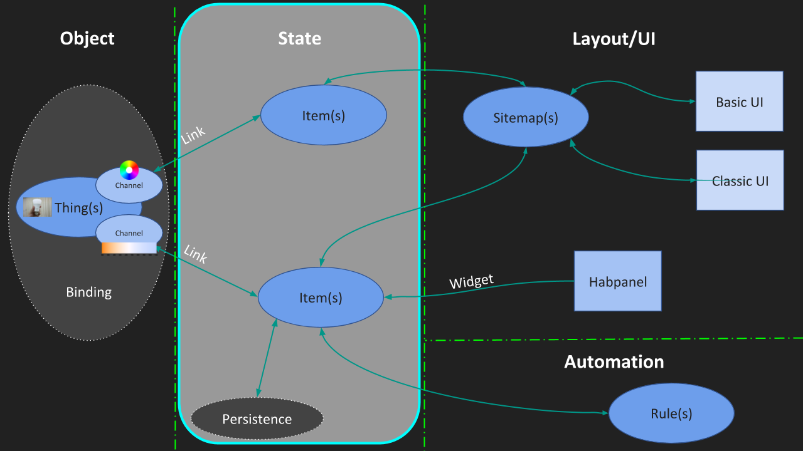
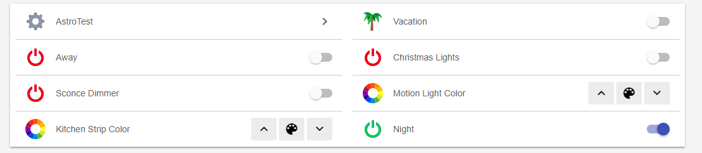

Not into walls of text? Watch the video "Items & Links".
Items
You have your set of Bindings installed so far. You have added automatically discovered Things via the Inbox or by manually adding them and explored available Channels on your Things.
However you do not control your devices directly via exposed Thing Channels. You link Channels to Items instead and control your home via Items.
Items are a representation of state in the openHAB system, for example the color of the Hue light bulb or whether the bulb is turned on or off. Items are usually linked to specific channels on the Thing, but there can also be Standalone Items that only store a value or setting.
Examples for Standalone Items are …
- a switch that you can use to tell openHAB whether you’re home or away,
- a default color you want your LED strips to show when first turned on.
These Standalone Items are often used in automation rules, which is a topic we’ll be tackling soon.
If you have a programming background, Items are basically variables in your program that store a value used by the rest of your program. In the same way, Items store a value, which can be set by the Thing channel they’re linked to, the User Interface, a rule or a persistence strategy (more about those later!).
Item Types
Just like there are different types of variables in a computer program, there are different types of Items for all the different types of data they need to store.

Group items
One additional, special type of item I want to show you is theGroup Item.
Group items allow you to organize several individual items into a group. This can be done to control multiple Item states with one Switch or Dimmer.

Group:Dimmer also allows them to be controlled with a single slider.Groups can also be used to logically organize multiple related items, for instance per room in a house.

Create & configure your Items and Group Items via the Items section.
Link item
Now that you are familiar with Items, you need to know how to link those to Channels.
- Head to the Things screen.
- Click on the "Channels" link
- Find your Channel in the list and find the Links section
You can link your channel to an existing Item or create a new Item on the fly or even let openHAB create Items for all the listed channels.
Skip to the tutorial section about Control interfaces to learn about Habpanel for example. It allows you to create a beautiful, tablet friendly user interface.